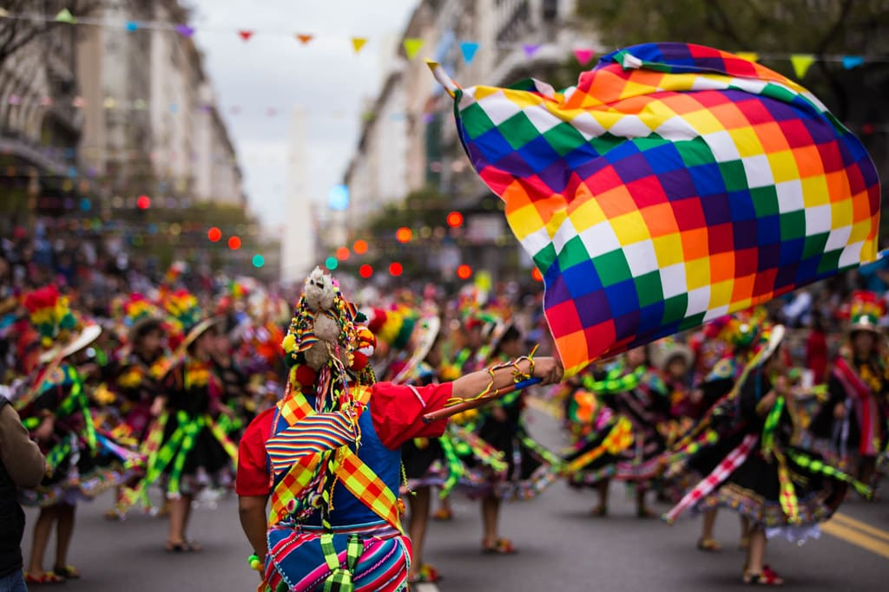
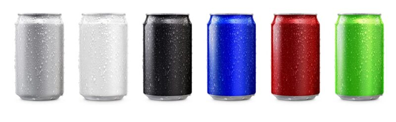

Saiba como a escolha de uma cor pode alterar sua percepção sobre sobre as coisas.
O que são cores?
Cor é a luz transportada em diferentes comprimentos de onda que, depois de absorvidos pelos olhos, são convertidos pelo cérebro nas tonalidades que conhecemos. A luz pode ser decomposta em um espectro de seis cores distintas: vermelho, laranja, amarelo, verde, azul e violeta.
Sendo assim, o vermelho tem o comprimento de onda mais longo, enquanto o violeta o mais curto.
Além disso, vale notar que um objeto que parece amarelo, consegue absorver todas as cores do espectro, exceto o amarelo. Assim fica mais claro entender o que são cores.
Portanto, essa luz não absorvida é refletida de volta pelo objeto para os olhos e para o cérebro, onde por fim é interpretada como amarelo.
Além disso, psicólogos classificaram os tons como quentes (vermelho e amarelo) e frias (azul e verde).
No entanto, a distinção entre cores quentes e cores frias é relativa; por exemplo, quando o vermelho e o amarelo estão lado-a-lado, o amarelo é considerado mais quente que o vermelho. Branco, preto e cinza são consideradas cores neutras.
De fato: como a experiência das cores varia de indivíduo para indivíduo, não é possível saber como outra pessoa vivencia a cor: a experiência de uma pessoa com um tom de vermelho pode ser percebida de forma diferente por outra.
Como funcionam as cores?
Por conta de seu amplo uso em nossa realidade, é preciso saber como funcionam as cores.
Primeiramente, conforme Leslie Harrington e Joan Jackie, os olhos são compostos por cones e bastonetes que nos permitem ver a cor e a luz, respectivamente.
Dessa forma, são três os tipos de cones: o Tipo I, associado ao azul; o Tipo II, associado ao verde; e Tipo III, associado ao vermelho. Outras tonalidades são interpretadas por meio das combinações dessas três.
Por outro lado, os bastonetes são células da retina dos olhos que são basicamente responsáveis pela visão noturna, visto que são capazes de detectar o nível de luminosidade. É a luz que define – e portanto afeta integralmente – a percepção de cores.
Por fim, muitas vezes é a luz elétrica que se faz responsável pela percepção, permitindo que as cores sejam vistas.
Essa iluminação elétrica se dá por meio de três tipos principais de lâmpadas: incandescentes, fluorescentes e Light Emitting Diode (Diodo Emissor de Luz), mais conhecidas como LED.
As Cores e a Saúde
De fato: as cores estão associadas à saúde há séculos. Antigos médicos egípcios ‘banhavam’ seus pacientes com cores de luz colorida para curar doenças.
Sendo assim, essa tendência ressurgiu no mercado, prometendo a cura por meio da exposição às cores.
Além disso, acredita-se que o vermelho energiza o fígado, o vinho (escarlate) aumenta a pressão arterial (e o roxo diminui), o laranja fortalece os pulmões e aumenta a absorção do cálcio, o verde ativa o sistema nervoso simpático e o amarelo energiza o trato alimentar.
Mami Kido em seu artigo ‘Bio-psychological effects of color’, sugeriu que o azul estimula mais o sistema nervoso simpático do que o vermelho e o verde. O sistema simpático é responsável pelo batimento cardíaco, pressão arterial e transpiração.
Portanto, estas descobertas contradizem as referências tradicionalmente aceitas sobre as cores no corpo: o vermelho associado ao aumento do estado metabólico e o azul à calma e relaxamento.
As Cores e a cultura

Em segundo lugar, a cor está diretamente relacionada com a cultura e a religião: em um estudo transcultural, Wiegersma e Van der Elst publicaram em seu artigo ‘Blue phenomenon: spontaneity or preference?’, que o azul era a cor preferida entre diversas culturas.
Por outro lado, laranja é cor sagrada na religião hindu na Índia, mas os Ndembo na Zâmbia nem mesmo reconhecem o laranja como uma cor.
Ainda, muçulmanos consideram o verde uma cor sagrada. Para os celtas, o verde também era sagrado o suficiente para ser incluído nas cerimônias de casamento até que a igreja cristã introduziu a cor branca.
Por outro lado, nas comunidades Inuit, o branco é tão importante que possui 17 palavras para descrevê-lo, cada uma com um significado diferente.
Por fim, vermelho e branco é a combinação usada na decoração de rituais na Melanésia e para representar o Sagrado Coração da Igreja Católica, no México.
Já o preto, por sua vez, sempre teve conotações negativas associadas, que remontam a 2300 a.C.
Cores e emoções
Ainda, as cores afetam pessoas diferentes de maneiras diferentes: Richard Cimbalo registrou no Journal of Genetic Psychology, em seu artigo ‘Emotionally toned pictures and color selection for children and college students’, associações testadas entre cores e emoções, que concluíram o amarelo, laranja e azul como cores felizes, e vermelho, preto e marrom como tons tristes.
Dessa forma, essas emoções (alegria e tristeza) eram semelhantes em todas as faixas etárias das crianças e adolescentes que participaram da pesquisa.
Ainda, Philip Kotler em seu artigo ‘Atmospherics as a marketing tool’ para o Journal of Retailing, indicou que variáveis de ambientação, como ruídos, tamanhos, formas, aromas e cores podem ajudar a chamar a atenção, transmitir mensagens e criar sentimentos que podem aumentar a probabilidade de compra.
Dessa forma, os efeitos de tais provocações atmosféricas têm demonstrado influenciar as respostas emocionais e comportamentais.
De fato: estas tonalidades são controversas. A ausência de resultados científicos conclusivos diretamente relacionados com influência efetiva da cor deu origem a várias especulações.
Portanto, enquanto a ciência segue tentando um vínculo real, organizações que oferecem consultoria em cores e agências criativas em geral registram algumas aplicações que podem ser reconhecidas como consenso.
Cores e restaurantes
A cor vermelha estimula o apetite por causa de seu efeito em nosso metabolismo, tornando-se solução popular entre restaurantes de fast-food, conforme Kulmanem em seu artigo ‘In today’s restaurants, color my sushi beautiful’.
Além disso, a cor amarela também é empregada pelo mesmo segmento para ‘sequestrar’ os interesses dos clientes – por ganhar a atenção – e encorajá-los a comer.
Entretanto, é menos comum, mas em alguns restaurantes usam a cor azul para acalmar e propor relaxamento aos clientes.
Dessa forma, espera-se que este ambiente reconfortante aumente a permanência, pois estadias mais longas podem corresponder a mais vinho, café ou sobremesas, gerando mais vendas.
Além disso, reforçando a controvérsia, como o azul pode estar associado a um estado de calma, segundo alguns consultores seu uso em restaurantes pode ser um inibidor de apetite.
Sendo assim, espaços que propõem ‘rodízios’ ou buffet com uma taxa fixa, poderiam usar a cor azul para melhorar o lucro, reduzindo o consumo dos clientes.
Cores e tempo de espera
De fato: Elas também influenciam a percepção da passagem do tempo. O tempo parece passar devagar e os objetos parecem maiores e mais pesados sob uma luz vermelha.
Por outro lado, o tempo parece passar mais rápido e os objetos menores e mais evidentes sob a luz azul.
Portanto, cassinos se utilizam desse conceito – eles usam a cor vermelha para deixar seus clientes entusiasmados ao mesmo com a sensação de não estarem perdendo muito tempo jogando.
Cores e marcas
As cores evocam marcas. Seja o verde da Heineken, o vermelho da Coca-Cola ou o amarelo da Shell, todas essas cores representam e reforçam suas marcas de forma efetiva para seus consumidores. Assim, Tutssel, em seu artigo ‘But you can judge a brand by its color’ para o periódico ‘Brand Strategy’, acredita que a forte carga emocional embarcada em cada cor pode promover uma resposta muito mais rápida a uma embalagem do que imagens ou texto. Além disso, hologramas e cores metálicas nas pastas de dente Colgate, segundo o autor, incentivam os consumidores à preferência contra as concorrentes da Procter & Gamble.
Cores e tendência
De fato: com o passar do tempo, indivíduos podem variar suas preferências por cores. Como especialistas em moda podem prever tendências, estudiosos também podem prever e definir tendências de cores.
Portanto, são previsões de curto e longo prazo para que as decisões possam acompanhar a tendência e ajustar a paleta de seus produtos.
Contudo, embora as previsões não tenham qualquer embasamento científico, costumam ter forte influência nas preferências populares.
Assim, enquanto alguns autores sustentam o pensamento de que as respostas humanas às cores são estáveis, outros discordam, afirmando que as respostas variam de acordo com o contexto.
Dessa forma, o que não é demonstrado em estudos científicos de forma significativa se evidencia em pesquisas conduzidas pelos criativos que lidam com cor no seu dia a dia.
Sendo assim, é importante que as decisões das organizações estejam cientes da importância percebida das cores em sua marca.
Portanto, se a cor das paredes ou da embalagem realmente pode mudar drasticamente a decisão de compra, porque não explorar isso?
Por conta disso, pesquisas relacionadas à escolha de coloração devem ser conduzidas e consideradas com atenção.
Assim, reconhecer os diferentes significados associados a cores específicas pode facilitar oportunidades de marketing multi-segmento.
Por fim, ainda com toda a controvérsia, a cor pode funcionar não apenas como um identificador imediato de sua marca, mas também como representação automática da sua qualidade e preço.